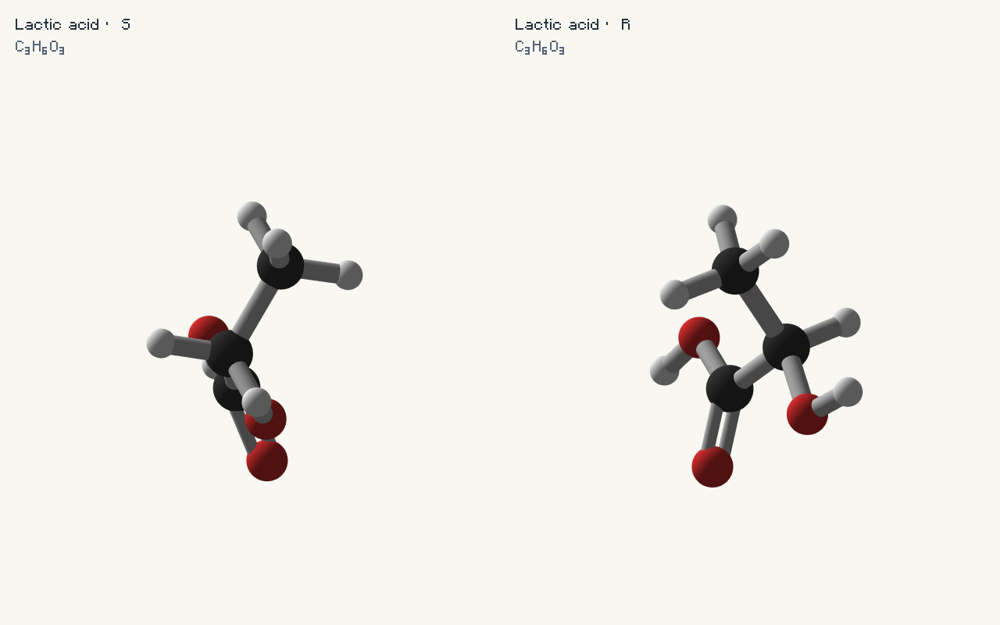
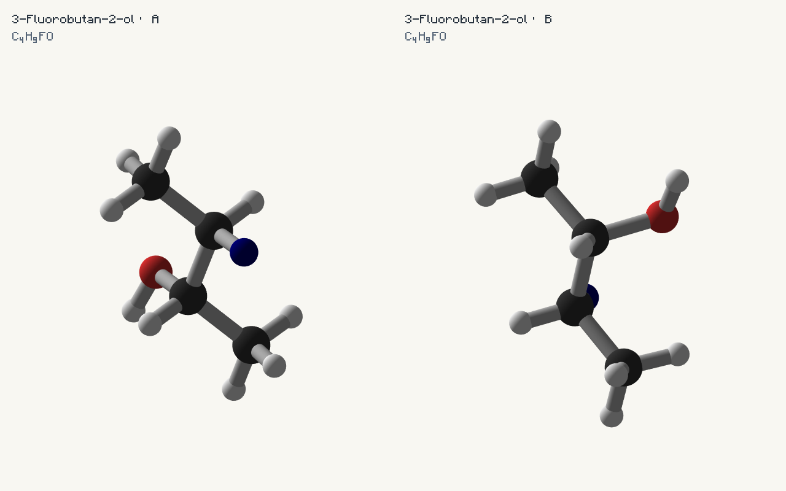
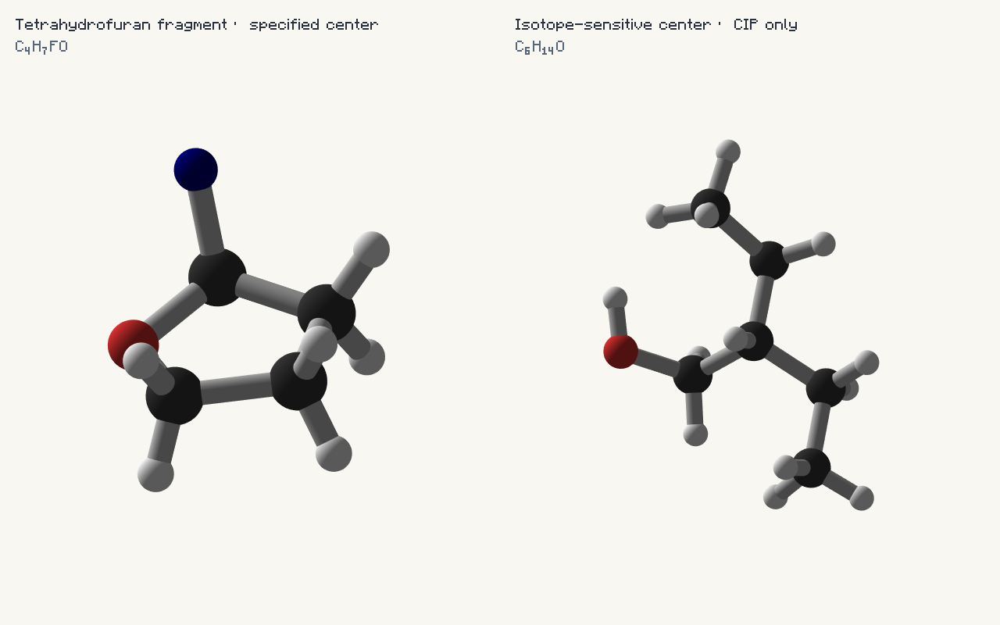
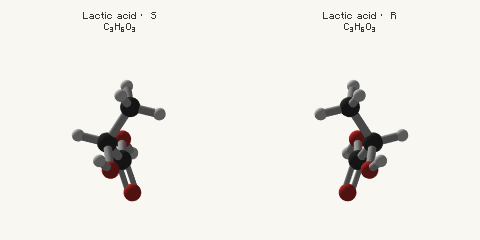

Show mirror-image molecules with SMILES
Build two molecules with the same bonds but different three-dimensional arrangements. The
examples use @ and @@ in SMILES, then read the
calculated R/S labels to check the result.
Java examples run in your host mod’s common initialization with
import io.. Groovy
examples belong in a GroovyScript post-init script; both sides need GroovyScript, but
connected clients need no local script. JSON is one definition per file under
config/; the filename supplies the path of the ID. Use / for
JSON changes; restart for script changes. The library registers none of these samples
automatically.
Write @ and @@ in the correct neighbor order
In SMILES, chirality follows the order in which neighbors are written, including branch
neighbors, ring-closure positions and bracket hydrogen. Swapping two written neighbors
requires changing @ to @@ to keep the same
configuration. Neither token means R or S on its own. Avogadro delegates this ordering to
OpenChemLib; it never treats the tokens as fixed R/S shortcuts.
N[C@@H](C)C(=O)O
N[C@H](C(=O)O)C
[C@@H](N)(C(=O)O)CThese three strings describe the same arrangement of groups around alanine’s central atom, so they produce the same checked geometry and label. This central atom is a stereocenter: exchanging two of its groups changes the molecule’s handedness. R/S labels describe that arrangement using the Cahn–Ingold–Prelog (CIP) group-ranking rules. Neither label depends on the camera angle. Unmarked SMILES still use schematic layouts.
Compare a molecule with its mirror image

AvogadroApi.owner("chemistry_guide")
.register(
new MoleculeBuilder("chemistry:lactic_a")
.name("Lactic acid · S")
.smiles("C[C@H](O)C(=O)O"));import io.github.wurtzitane.avogadro.api.*
mods.avogadro.molecules.register(
new MoleculeBuilder("chemistry:lactic_a")
.name("Lactic acid · S")
.smiles("C[C@H](O)C(=O)O")){
"name": "Lactic acid · S",
"smiles": "C[C@H](O)C(=O)O"
}AvogadroApi.owner("chemistry_guide")
.register(
new MoleculeBuilder("chemistry:lactic_b")
.name("Lactic acid · R")
.smiles("C[C@@H](O)C(=O)O"));import io.github.wurtzitane.avogadro.api.*
mods.avogadro.molecules.register(
new MoleculeBuilder("chemistry:lactic_b")
.name("Lactic acid · R")
.smiles("C[C@@H](O)C(=O)O")){
"name": "Lactic acid · R",
"smiles": "C[C@@H](O)C(=O)O"
}These lactic-acid models are mirror images that cannot be made identical by rotating them; such a pair is called enantiomers. For fully specified tetrahedral pairs, Avogadro generates one repeatable three-dimensional arrangement, called a conformer, and reflects it in X for the opposite member. Camera rotation never changes one member into the other. The displayed arrangement is schematic, not a measured crystal structure or a claim of the lowest possible energy.
Change one stereocenter while keeping another

AvogadroApi.owner("chemistry_guide")
.register(
new MoleculeBuilder("chemistry:diastereomer_a")
.smiles("C[C@H](O)[C@H](F)C"));import io.github.wurtzitane.avogadro.api.*
mods.avogadro.molecules.register(
new MoleculeBuilder("chemistry:diastereomer_a")
.smiles("C[C@H](O)[C@H](F)C")){
"name": "3-Fluorobutan-2-ol · A",
"smiles": "C[C@H](O)[C@H](F)C"
}AvogadroApi.owner("chemistry_guide")
.register(
new MoleculeBuilder("chemistry:diastereomer_b")
.smiles("C[C@H](O)[C@@H](F)C"));import io.github.wurtzitane.avogadro.api.*
mods.avogadro.molecules.register(
new MoleculeBuilder("chemistry:diastereomer_b")
.smiles("C[C@H](O)[C@@H](F)C")){
"name": "3-Fluorobutan-2-ol · B",
"smiles": "C[C@H](O)[C@@H](F)C"
}A diastereomer is generated and checked separately. Its coordinates need not be a simple reflection. The two examples change only one authored center, so they are not enantiomers.
Read the R/S label for an atom
MoleculeDef definition = AvogadroApi.registeredView()
.get(
new ResourceLocation("chemistry:lactic_a"));
definition.structure()
.stereochemistry()
.forEach((atomIndex, configuration) -> {
// atomIndex is zero-based in definition.structure().atoms().
System.out.println(atomIndex + ": " + configuration);
});Pass the registered molecule ID and the zero-based atom index. An empty result means the atom has no assigned R/S label. The examiner’s atom-hover label includes CIP information where present. Atom ordering for stereochemical SMILES is canonicalized; query the output graph before authoring index-based annotations or constraints.
Isotopes, multiple bonds and rings
Centres 1.5 applies CIP sequence rules, including duplicate nodes for multiple bonds and ring paths, isotope ranking and auxiliary stereochemical comparisons. OpenChemLib 2026.10.3 handles parsing, canonicalization and conformer generation. Both are pinned, bundled common-side Java libraries with BSD licenses. JavaFX is not used by this path.

AvogadroApi.owner("chemistry_guide")
.register(
new MoleculeBuilder("chemistry:isotope")
.smiles("CC[C@](CO)([H])[14CH2]C"));import io.github.wurtzitane.avogadro.api.*
mods.avogadro.molecules.register(
new MoleculeBuilder("chemistry:isotope")
.smiles("CC[C@](CO)([H])[14CH2]C")){
"name": "Isotope-sensitive center · CIP only",
"smiles": "CC[C@](CO)([H])[14CH2]C"
}The isotope affects CIP ranking. Element spheres remain element-colored; this does not automatically configure nuclear/neutron rendering, nor does the existing average atomic-weight API become an exact isotope-mass calculator.
Leave unmarked stereocenters unassigned
NC(C)C(=O)O has no assignment. With partially specified input, a conformer
necessarily shows one spatial arrangement for any unmarked center, but Avogadro does not
claim or label that arrangement as authored stereochemistry. No unspecified center is added
to the assignment map. Use explicit stereochemical input when the displayed stereoisomer
matters.
Copies, synchronization and geometry changes
A normal copy shares the immutable geometry and assignment map. Synchronization
carries the original JSON and reconstructs the same deterministic result; the binary
geometry cache includes assignments. Viewers, tooltips and exports consume the finished
positions without stereochemical parsing or CIP work per frame. Current clients and servers
must use the same build: synchronization protocol 3 rejects older payloads even though the
public mod version remains unchanged.
Structure and
with retain labels and reject flattened or inverted specified
centers. Generic fragment conversion and arbitrary topology edits retain actual positions
but do not carry a claim that previous CIP labels are still valid after atom/bond changes.
To obtain fresh validated R/S assignments for changed chemistry, supply updated
stereochemical SMILES.
Explicit limits and diagnostics
-
Supported annotations are tetrahedral
@and@@on four-ligand absolute centers, including bracket H. -
Directional double bonds (
/,\), axial/allene, lone-pair stereochemistry, extended@SP/@TB/@OH/@THsyntax, pseudoasymmetric r/s, relative stereo groups and reaction/CXSMILES are rejected. This is not complete stereochemical OpenSMILES conformance. - Unresolved wildcards in stereochemical SMILES are rejected because their unknown ligands can change CIP priorities. Resolve groups before requesting R/S.
- Marked SMILES are bounded to 8192 characters and 512 atoms after hydrogen expansion; conformer search has a five-second limit, and CIP graph work is bounded. Failure produces a definition diagnostic, never a flattened fallback or guessed label.
- Invalid annotations, non-stereogenic marked centers, failed conformer checks and unresolved CIP assignments reject that definition.
Compare the rotating models

Sources
OpenSMILES specification · OpenChemLib · Centres CIP implementation and validation cases · RDKit’s documentation of the Centres-derived CIP approach
Calls used in the examples
| Call or setting | Arguments | What it does |
|---|---|---|
smiles(text)
|
SMILES with tetrahedral markers | Describe the local ordering used to construct the three-dimensional arrangement. |
AvogadroApi.owner(name).register(builder)
|
Owner name; authored definition | Publish each arrangement under its own molecule ID. |
When you finish: A builder creates a model but does not add it to the
game. Java registrations use a name, called an owner, to group the definitions your mod
controls; choose your mod ID. A RegistrationJob lets you cancel pending work
or remove its installed set later. JSON and Groovy registrations use their file or script
loading rules instead. Keep drawing and exports in client code. Directional double-bond
markers are not supported as stereochemical instructions; follow the supported cases and
validation rules below.